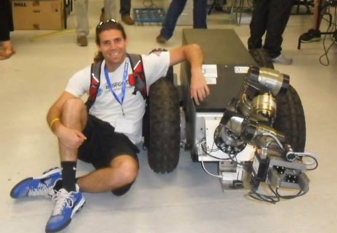

Senior Machine Learning Engineer
Building and scaling recommendation systems for the Shop app, with a focus on modern candidate-generation methods and the use of large language models in recommendations.
Machine Learning Researcher
I am a senior machine learning engineer at Shopify, building and scaling recommendation systems for the Shop app. My work spans recommender systems, personalization, natural language understanding, and reinforcement learning.
I am especially interested in reinforcement learning, generative models, and robotics.

I build machine learning systems that connect research ideas with production impact. My experience ranges from large-scale recommendations and personalization to natural language understanding, reinforcement learning, and autonomous navigation.
Building and scaling recommendation systems for the Shop app, with a focus on modern candidate-generation methods and the use of large language models in recommendations.
Built and scaled the store's recommendation systems and helped define the company roadmap for personalization initiatives.
Researched recommendation and ranking methods, then translated them into production models serving real user experiences.
Conducted research and implemented machine learning solutions for Alexa's core natural language understanding system.
Studied reinforcement learning with an emphasis on temporal abstraction, option discovery, meta-learning, and transferring prior experience to new tasks.
Developed navigation methods for unmanned aerial vehicles, extending earlier research in robotics, motion planning, and path finding.
Developed natural language techniques designed to make data and business analytics more accessible.
Francisco Garcia, Luoxin Chen, Varun Kumar, He Xie, and Jianhua Lu · NAACL
Francisco M. Garcia, Chris Nota, and Philip S. Thomas
Francisco M. Garcia and Philip S. Thomas · NeurIPS
Francisco M. Garcia, Bruno C. da Silva, and Philip Thomas · AAAI Workshop on Reinforcement Learning in Games
Stephen Giguere, Francisco M. Garcia, and Shridar Mahadevan
Kai Ninomiya, Mubbasir Kapadia, Alexander Shoulson, Francisco M. Garcia, and Norman I. Badler · Computer Animation and Virtual Worlds
Francisco M. García, Mubbasir Kapadia, and Norman I. Badler · IEEE ICRA
Mubbasir Kapadia, Kai Ninomiya, Alexander Shoulson, Francisco M. García, and Norman I. Badler · ACM SIGGRAPH Motion in Games
Mubbasir Kapadia, Francisco M. García, and Norman I. Badler · IEEE/RSJ IROS
Mubbasir Kapadia, Alejandro Porres, Francisco M. García, Vivek Reddy, Nuria Pelechano, and Norman I. Badler · ACM SIGGRAPH/Eurographics SCA
Alexander Shoulson, Francisco M. García, Matthew Jones, Robert Mead, and Norman I. Badler · Motion in Games